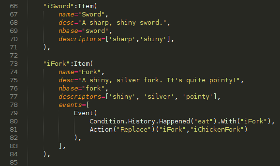

The Basics
Satay is an extensible game engine written entirely in
Python.
Its very basis makes distinctions between Commands, Gamemodes, and Gamemode Functions.
Commands execute Gamemode Functions through user interaction.
Gamemode functions change a game's state.
Gamemodes define the medium* and elements of a game.
However, Satay allows for exceptions as we'll see later.
Features
Events use conditions to execute post-command* Gamemode Functions.
History tracks all commands ever issued* for easy condition creation.
Premade gamemodes — only define what makes your game "your game."
NPC dialog trees allow for the effortless creation of complex character dialog.
Why Satay?
Minimal learning curve.*
Beautiful and clean structure.
Just look!

Universal application*
Written in Python, a cross-platform and marvelous language.
Includes utilities for compilation*.
Come on, Satay needs some lovin,' so
give it a try!